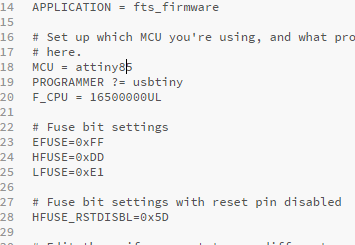

ISP programmer
In this assignment, we will be making an ISP programmer, so we can use it to program our attiny board.
For the files to create our PCB, we will be using brian's board, for more info and an better explaination, you can gp this page here:building the fabtinyisp.
For the png file, we will be using the ones from brian, the png files are here as shown:
{kind=link}
{kind=link}
Now we have the png files, we can use mods to create the code. to see the settings and steps for milling a PCB, do go to the electronics production page, where I show how to do them.
The finished PCB should look like this:

After the PCB is cut and removed, you will need to sand the burs down with a 240 grit sandpaper, then polish it with a 800 grit sandpaper.
Once the traces are sanded flat and smooth, you can use a penknife to scrape the excess copper off, it is most important to strip the front piece of copper in between the second and third pads, or else it will short it out and cause your USB port to spoil.

Now we can collect the components and start soldering, for the components you will need:
- 1x Attiny85 IC
- 2x 1kΩ resistors
- 2x 499Ω resistors
- 2x 49Ω resistors
- 2x 3.3v zener diodes
- 1x red LED
- 1x green LED
- 1x 100nf capacitor
- 1x 2x3 pin header
The LEDs are optional, the red LED will turn on when there is a power supply and the green LED will on when it is talking to a target board.
Bottom shown now is the schemetic and layout of the components, a tip to be ablwe to solder effectively is to first solder the smaller components first such as the IC, resistors, zener diodes and LED, then solder the bigger ones like the header.
The zener diodes have polarities and in the board layout, there is a line on it, that is ther zener diode's cathode. On ther component itself, the cathode is labelled the same way, so when soldering it is something to take note.
The Attiny IC has also the same style of marking to take note, on the IC, there is a dot to show its first pin, do the same thing and take note of it when soldering.
On the back of the LED, there is the way to see the polarity. using that mark, you can know how to position the LED so it will not be in reverse.
One important thing to take note is to connect the jumper(J1) together, so this way it will not be an open circuit.
Improving the USB connection
As the board is too thin to ensure a proper connection for its USB connector, there are some improvements that you can make with it.
- You can add some solder on the connecrtion pads to help elevate it higher, do take note to not add too much on one side or else it will be uneven, where one side can connect while the other is open.
- You can also add a piece of scrap plastic or similar on the bottom to help as well, I use a piece of card on the bottom and glued it with superglue.
Now we need to instal some software and we are almost done. There are many ways to instal the software depending on which device you are using, we will be using windows, so all these steps is for Windows devices.
Steps for installing software
First we need to install git for windows, the download link will be here: Git for Windows
Now we install GNU make and launch the installer, just accept it's default locations: Gnu Make
Now we install avrdude, unzip the file and save it in program files: avrdude
Finally, install the toolchain for Windows, then extract the files and save it in program files: AVR-GCC 10.1.0 for Windows 32 and 64 bit
Now we go into environment variables, then enter into "PATH", then we need to add these 3 paths into it, the paths to add are: C:\Program Files\avrdude C:\Program Files\avr-gcc-10.1.0-x64-windows\bin C:\Program Files (x86)\GnuWin32\bin
Now we need to install a driver, we will use zadig
The next step is to download the firmware source code, extract the file and open the makefile using brackets.
We will need to change the programmer inside it, since we are using the Attiny85, we will need to change the programmer from '45' to '85'.
Now we open command prompt and cd into the file, then type in 'make' to gemerate files, it will first generate a .elf file, then do the make command again and it will generate .hex file, the hex file is the most important as it is the one that can do the other commands.
Next command to type in is 'make flash', you will then see the progress bar and the LEDs flash.
Next command will be 'make fuses', you should see the progress bars and LED flash again.
Last command will be 'make rstdisbl', it will disable the reset fuse and turn the reset pin into a IO pin.
And finally, that is it! You have finished building the programmer and you are ready to use it to program other Attiny ICs.